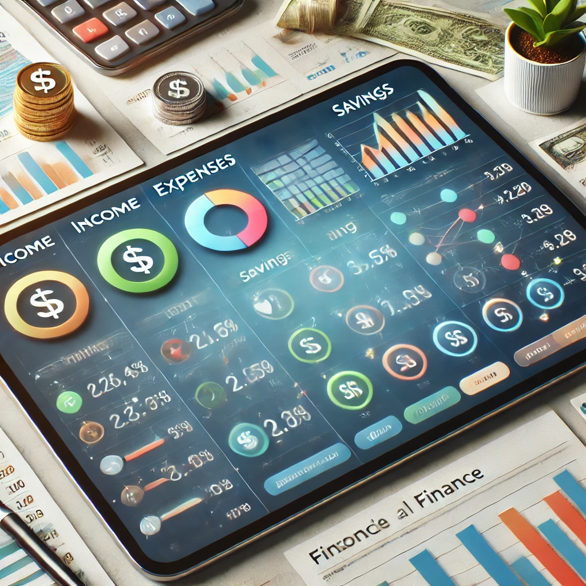

Te ofrecemos herramientas para mejorar tu administración financiera y ayudarte a alcanzar la estabilidad económica.
Aprende a gestionar tu dinero de manera eficiente con información detallada sobre presupuestos, ahorro e inversión. La educación financiera es clave para tomar decisiones informadas y evitar deudas innecesarias. Descubre estrategias para mejorar tu control del dinero y alcanzar tus metas financieras a corto y largo plazo.
Te enseñamos a crear un plan de gastos basado en tus ingresos y necesidades, ayudándote a identificar gastos esenciales y reducir aquellos innecesarios. Una buena planificación te permite ahorrar más y aprovechar mejor tus recursos. Aprenderás a utilizar herramientas digitales para controlar tus ingresos, gastos y visualizar patrones de consumo.
Descubre opciones de inversión seguras y rentables para hacer crecer tu patrimonio a largo plazo. Explicamos los diferentes tipos de inversión, desde cuentas de ahorro con intereses hasta acciones y fondos de inversión. Aprende cómo minimizar riesgos y diversificar tus activos para asegurar una estabilidad financiera futura.
Si tienes deudas, te proporcionamos estrategias efectivas para pagarlas rápidamente y reducir los intereses. Conoce métodos como el "avalancha" o "bola de nieve" y aprende a negociar con instituciones financieras para obtener mejores condiciones. Administrar adecuadamente las deudas es fundamental para mantener una salud financiera óptima.
El ahorro es una pieza clave en la administración financiera. Te enseñamos cómo establecer metas de ahorro realistas, identificar los mejores métodos para guardar dinero y aprovechar productos financieros como cuentas de ahorro, certificados de depósito e inversiones a largo plazo. Asegura tu futuro financiero con un plan de ahorro sólido y estructurado.